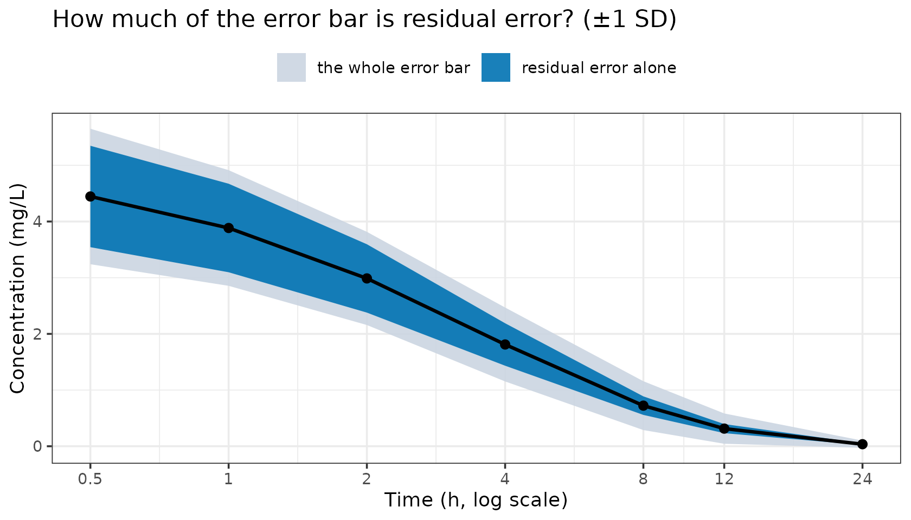
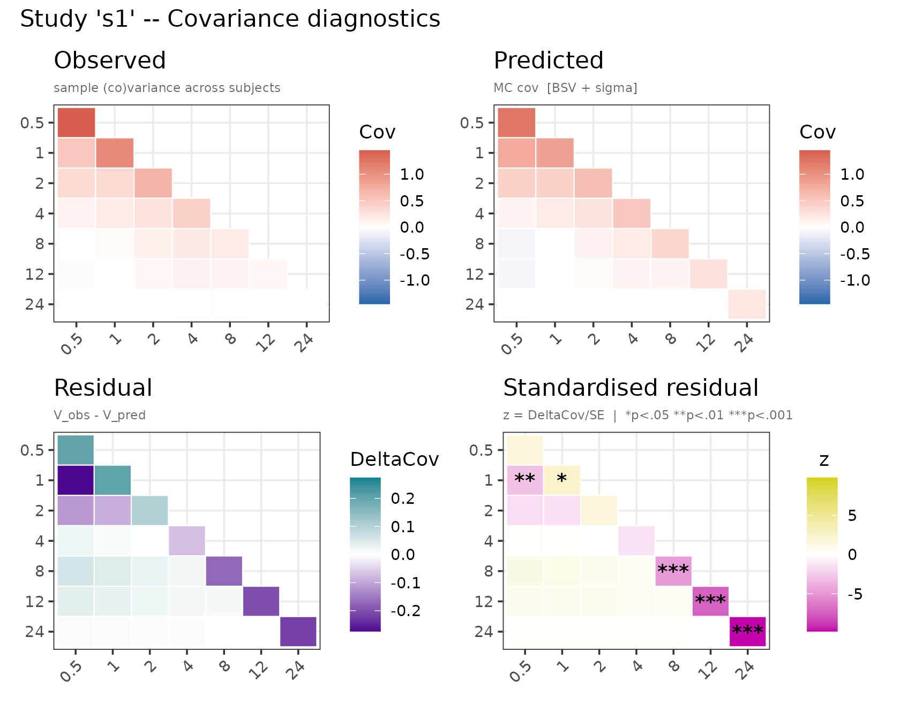

The question
Your model ends with cp ~ prop(res.sd), as in an
individual-level fit. The input is not individual data, though: it is a
mean and an error bar per time point, digitised from a figure or implied
by a published model through datagen(), and usually several
studies at once.
Each error bar holds two things the fit has to tell apart — subjects
genuinely differ, and each reported value carries
variability the structural model does not explain. Your residual model
is the claim about how to split them, and that split decides what goes
to omega and what to the residual.
How residual error lives in aggregate data
A published error bar is one number covering both sources of spread, and only the second — the variability the structural model does not explain — is your residual model’s job.
Everything below uses one model and one study, with
datagen() standing in for a digitised summary so the true
values are known. A real analysis would read E,
V and n off the paper; see From a published figure to E, V and
n.
times <- c(0.5, 1, 2, 4, 8, 12, 24)
mod_prop <- function() {
ini({
tcl <- log(5) ; label("Log clearance (L/h)")
tv <- log(20) ; label("Log volume (L)")
res.sd <- c(0, 0.2); label("Residual error SD")
eta.cl ~ 0.09
eta.v ~ 0.04
})
model({
cl <- exp(tcl + eta.cl)
v <- exp(tv + eta.v)
d/dt(central) <- -(cl / v) * central
cp <- central / v
cp ~ prop(res.sd)
})
}
gen <- datagen(
studies = list(s1 = list(times = times, ev = rxode2::et(amt = 100), n = 200L)),
model = mod_prop, control = datagenControl(n_sim = 20000L, seed = 1L))Simulating the individual data behind such a summary — 20 000 subjects, each observed 25 times, so the two sources can be separated — shows how they sit inside the error bar:

The light band is the whole error bar; the dark band is how much of it residual error alone would produce. The dark band is drawn inside the light one, not stacked on it: the total SD is sqrt(var_between + var_resid), not the sum of the two SDs.
The residual’s share is not constant: it dominates early and is almost invisible by 24 h. That changing share is the shape information a fit uses to tell the two apart — which is why the residual model you name matters, and why a wrong one has somewhere to hide.
What a wrong residual model does to a fit
Fit the same study twice, changing only the error line:
mod_add <- mod_prop |> model(cp ~ add(res.sd)) |> ini(res.sd = 0.5)
fit_prop <- nlmixr2(mod_prop, admData(), est = "adgh",
control = adghControl(studies = gen, print = 0L))
fit_add <- nlmixr2(mod_add, admData(), est = "adgh",
control = adghControl(studies = gen, print = 0L))
pull <- function(fit, nm) unname(fit$parFixedDf[nm, "Estimate"])
knitr::kable(
data.frame(
parameter = c("CL (L/h)", "V (L)", "IIV on CL", "IIV on V",
"residual SD", "-2LL"),
truth = c(5, 20, 0.09, 0.04, 0.2, NA),
prop = c(exp(pull(fit_prop, "tcl")), exp(pull(fit_prop, "tv")),
fit_prop$omega[1, 1], fit_prop$omega[2, 2],
pull(fit_prop, "res.sd"), fit_prop$objective),
add = c(exp(pull(fit_add, "tcl")), exp(pull(fit_add, "tv")),
fit_add$omega[1, 1], fit_add$omega[2, 2],
pull(fit_add, "res.sd"), fit_add$objective)),
digits = 3,
caption = paste("Same data, same structural model, two residual models.",
"The additive residual SD is in mg/L and is not comparable to",
"the proportional one."))| parameter | truth | prop | add |
|---|---|---|---|
| CL (L/h) | 5.00 | 5.00 | 5.213 |
| V (L) | 20.00 | 20.00 | 19.597 |
| IIV on CL | 0.09 | 0.09 | 0.084 |
| IIV on V | 0.04 | 0.04 | 0.065 |
| residual SD | 0.20 | 0.20 | 0.467 |
| -2LL | NA | -1542.27 | -4.118 |
The proportional fit recovers all five generating values. The additive fit leaves clearance and volume within a few percent — the dangerous part, CL and V being the first numbers anyone checks — while the IIV on volume comes back 63% too large. The variance the residual failed to account for has to go somewhere, and a trial sized from that fit would simulate the wrong spread.
The objective moves 1538 points, so comparing the two catches it. The covariance panel shows the same thing without needing a second fit at all:
plot(fit_add, which = "cov")
Covariance diagnostics for the additive fit. In the lower-right panel, cells marked with an asterisk are where the predicted covariance differs from the observed by more than the sampling noise in V.
When the residual model fits, the standardised panel looks like
noise. Here the diagonal is starred early and late in opposite
directions: one constant variance spread over the whole profile, too
small where concentrations are high and too large where they have
decayed. That opposite-sign pattern is the signature of an additive
model on proportional data; refit with prop() or
add() + prop().
This panel is the aggregate-data replacement for a residual-vs-predicted plot — see Diagnostic plots.
What you can write
Ordinary nlmixr2 syntax; admixr2 adds nothing to the language. The
estimator is the constraint: adirmc supports the
closed-form continuous models only, computing its mean by
importance-reweighting samples inside one compiled routine that knows
just those variance forms. admc, adfo and
adgh support all of it.
| Written as | Estimators | Notes |
|---|---|---|
| Continuous — exact, closed form | ||
cp ~ add(a) |
all four | |
cp ~ prop(b) |
all four | |
cp ~ pow(b, c) |
all four | exact at c = 0.5 and 1; otherwise the
moments use a second-order expansion. c is an exponent, not
an SD |
cp ~ add(a) + prop(b) |
all four | variance a² + (b·f)²
|
cp ~ add(a) + prop(b) + combined1() |
all four | variance (a + b·f)² — a different model, not a
reparameterisation of the row above |
cp ~ lnorm(a) |
all four | moment-matched log-normal |
any of the above + t(nu)
|
all four |
fix nu: only a²·nu/(nu−2)
is identified, so a free nu returns its starting value |
| Transformed — integrated numerically | ||
cp ~ boxCox(lambda) + add(a) |
not adirmc
|
lambda estimated or fixed |
cp ~ yeoJohnson(lambda) + add(a) |
not adirmc
|
lambda estimated or fixed |
cp ~ logitNorm(a, lo, hi) |
not adirmc
|
for an endpoint with a floor and a ceiling |
cp ~ probitNorm(a, lo, hi) |
not adirmc
|
as above |
| Discrete — no residual parameters | ||
y ~ pois(cp) |
not adirmc
|
the prediction is the argument, not the left-hand side |
y ~ binom(N, pp) |
not adirmc
|
N is the binomial denominator per observation, not the
study’s n, and must be constant |
y ~ nbinomMu(k, cp) |
not adirmc
|
|
cp ~ c(p1, p2, ...) |
not adirmc
|
ordinal; p1, p2, ... are the category probabilities,
one observation block each |
y ~ beta(shape1, shape2) |
admc, adgh
|
the precision is implied by the two shapes, which adfo
and adirmc cannot reach |
| Correlated residuals | ||
cp ~ add(a) + ar(rho) |
not adirmc
|
needs a full observed V, and pairs
with add() only |
Each endpoint carries its own error model, so a multi-output model keeps them separate — see Several observed compartments.
nu and rho are the two parameters aggregate
data does not identify, and they fail differently. nu
enters only through the variance multiplier, so it is aliased with the
scale — admixr2 warns and hands back your starting value, which is why
you should fix it. rho lives in the off-diagonal, where a
diagonal V carries no information at all, so that is a hard
error.
Anything else is refused: lnorm mixed with
prop/pow/ar/t,
ar with a prediction-dependent variance or a transform,
t() with no scale term, cauchy(), and the
distributions admixr2 does not implement. Each has no single
well-defined aggregate mean and variance, so it is refused rather than
quietly fitted as something else:
bad <- mod_prop |> model(cp ~ lnorm(res.sd) + prop(b)) |> ini(b = 0.2)
nlmixr2(bad, admData(), est = "adgh", control = adghControl(studies = gen))
#> Error:
#> ! Unsupported residual error model for endpoint 'cp': lnorm() combined with a proportional or power term.
#>
#> Why: lnorm()'s parameter is the SD on the LOG scale, which already makes
#> the residual proportional to the prediction; adding prop()/pow() on top
#> has no single well-defined aggregate variance.
#>
#> admixr2 fits AGGREGATE data -- each study contributes a mean and a
#> covariance, scored as a multivariate normal -- so the residual model must
#> reduce to a mean and a variance on the natural scale.
#>
#> Fix: Use lnorm(a) alone, or add(a) + prop(b) on the natural scale.
#>
#> Supported residual error models (f = the model prediction):
#> add(a) var = a^2
#> prop(b) var = (b*f)^2
#> pow(b, c) var = (b*f^c)^2
#> lnorm(a) lognormal, moment-matched
#> add(a) + prop(b) var = a^2 + (b*f)^2 [combined2, the default]
#> var = (a + b*f)^2 [combined1, via combined1()]
#> add(a) + pow(b, c) either combined form
#> ... + t(nu) any of the above with Student-t residuals (nu > 2):
#> the scale family, var = <above> * nu/(nu-2)
#>
#> Note: earlier versions of admixr2 accepted this model with a warning and
#> then fitted it as ADDITIVE error. Any results carried over from that are
#> not the model you specified.Setting resid_nodes on a transformed endpoint
cp ~ boxCox(lambda) + add(a) says the residual is normal
on the transformed scale, not in mg/L — while the study
reports its mean and SD in mg/L. So admixr2 has to answer a question
that never comes up in an individual-level fit: if the residual is
normal after transformation, what are the mean and variance back on the
original scale?
For add() and prop() there is a formula.
For boxCox, yeoJohnson, logitNorm
and probitNorm there is not: the transform bends the
residual, so the mean of the back-transformed values is not the
back-transform of the mean, and neither moment has a closed form.
admixr2 integrates over the residual instead — the same machinery as
the Gaussian quadrature that integrates over the etas
in a mixed-effects likelihood (nlmixr2’s agq,
lme4’s nAGQ), aimed at a different integral:
over the residual at one observation rather than over a subject’s random
effects.
Concretely, the endpoint is evaluated at resid_nodes
different residual values, each weighted by its probability under the
normal, and averaged. Two things separate this from simulating
residuals.
The values are chosen, not drawn. Gauss-Hermite
places n points so the weighted average is exact whenever
the averaged quantity behaves like a polynomial of degree
2n - 1 or less, so a few well-placed points do the work of
a great many random draws. They sit symmetrically about zero and reach
to about ±sqrt(2n) residual SDs, so a higher count resolves
the middle and reaches further into the tails at once.
The grid never moves. The same points at every likelihood evaluation, so the objective is smooth and its gradient usable. Fresh residuals would add Monte Carlo noise to every evaluation for the optimiser to work through.
How many nodes you need depends on how curved the back-transformation is over the range the residual explores. The demanding case is a wide residual on a bounded endpoint, where the back-transform flattens against both bounds: at an SD of 2 on the transformed scale, 7 nodes puts the 24 h variance 7% low and 15 nodes 0.6% low. The default of 81 covers that with room to spare, at a cost invisible beside the ODE solve.
resid_nodes is on all four estimator controls and on
datagenControl(), so a study you generate and the fit that
consumes it integrate the residual the same way unless you change one of
them.
How to choose
There is no residual plot to look at. The choice comes from the published error bars, from what the source papers report, and from the diagnostics above.
Read the error bars. Widening roughly in proportion to the mean points to
prop(); constant width across the profile toadd(); wide at the top and not shrinking to nothing at the bottom toadd() + prop().-
Take the residual from the source that reports one. A study publishing its own population model has already estimated a residual from the individual data you do not have — better information than an aggregate fit can recover. Supply that model to
datagen()and it comes along, or fix yours to the same value: Ask whether one residual across studies is credible. Different laboratories, different assays, years apart — they will not share a residual magnitude. A single pooled residual is an assumption, not a default. Where one study’s error bars are much wider relative to its means, give that endpoint its own residual rather than letting it set the value for everyone.
Bounded endpoints belong on a transformed scale. A score with a floor and a ceiling wants
logitNorm()orprobitNorm(), notadd(), which will happily predict outside the range without warning.Then check. Fit the candidates, compare objectives, read the covariance panel. A residual model that fits leaves no structure in the standardised residual.
The residual and the IIV are separated only by their
different time-course. That is the constraint behind everything
above. Where the two have a similar shape — a proportional residual
against IIV on a parameter that scales the whole profile — they trade
off and the split is weakly determined. The worked example is that
failure in miniature: the misspecified residual put its missing variance
straight into omega.v.
It is also an argument for what admixr2 is for. One study with few time points barely identifies the split; several at different doses and schedules constrain it from more directions at once, which is why a meta-analysis is better posed here than a reanalysis of any single study.
How the residual enters the covariance
The structural covariance Cov(f) – the spread from
subjects differing – carries the residual on top, averaged over subjects
by the law of total variance:
A subject’s residual scales with that subject’s
prediction, not the population mean, and the average of a square exceeds
the square of the average by the between-subject variance. Evaluating
the residual once at the population mean – the “no eta-eps interaction”
convention, familiar from individual-level fitting where each
observation has its own prediction – drops that b^2 Var(f)
term.
| error model | adds |
|---|---|
add(a) |
a² |
prop(b) |
b²·(mean² + Var(f)) |
pow(b, c) |
b²·E[f^(2c)] |
lnorm(a) |
the diagonal, and the off-diagonals scaled by
exp(s)
|
lnorm() is the one that is not merely a diagonal
correction: its conditional mean is f·exp(s/2), so the
whole covariance is scaled. Against the simulated subjects above, where
the residual’s true contribution is known, this rule agrees to 0.6% at
every time; evaluating at the population mean misses 74% of it by 24 h,
where subjects differ from one another by more than the mean itself.
Purely additive models are unaffected either way. Versions up to 0.3.0
used the population-mean rule, so every prop(),
pow() and lnorm() fit moves; see
NEWS.md.
Two caveats
-
Point estimates are recovered; the reported uncertainty is
approximate. The objective’s covariance term treats your
observed
Vas coming from normally distributed subjects. That holds foradd/prop/pow/lnormand approximates a heavy-tailed or bounded per-subject residual (small-nut, counts,beta). Say so when reporting SEs or intervals from those. -
Results from before 0.4.0 may have been fitted as something
else. A version that accepted a now-refused model with only a
warning –
pow()above all – fitted it as additive error. Treat those as suspect.
See also
-
From a published figure to E, V and
n — where
EandVcome from - Comparing the estimators — pairing an estimator with an endpoint
- Diagnostic plots — reading the covariance panel
-
Simulating data & using published
models —
datagen(), used throughout here - Getting started